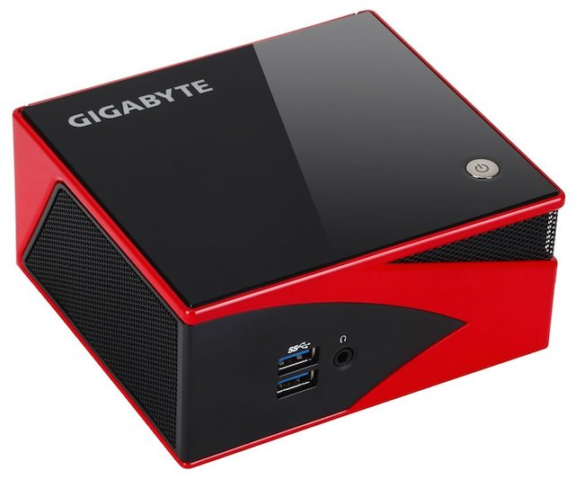

Computers are getting smaller. If you’re in the market for a new desktop PC, it makes sense to consider the new line of mini PCs over a giant tower. But apart from their serious power in a compact package, there are a few things you should know.
As a recent convert to the world of mini PCs, I often mocked these tiny devices as something which would never hold up to the computing power I needed. And that was true for several years. But the recent strides in technology have made me realize that the things that make mini PCs small don’t make them any less powerful.
That said, there are still some changes, improvements and trade-offs that you should be aware of before buying one.
Barebones vs. Ready To Go
Typically, you will find several variants of any mini PC you look at, like the Intel NUC — the most popular choice. But read the finer details before you buy. Mini PCs come in two flavors: Barebones and Ready To Go.
A barebones kit includes the case, the motherboard and the processor. You will need to buy and install the hard drive and RAM separately. Typically, these are far cheaper than Ready To Go units. If you want to reuse old computer parts or buy specific parts, the barebones system is the way to go. The Intel NUC5i5RYK ($340) would be my pick.

Price: $337.35
A Ready To Go kit also includes the hard drive and RAM, as well as an operating system of your choice. This type of mini PC is ready to be used as soon as you take it out of the box. The Ready To Go mini PC is ideal for anyone who wants to start afresh. With Intel NUCs, you’ll mostly get these from third-party vendors like this.
Both types of units come with Wi-Fi, Bluetooth, USB, and other such parts pre-installed.
Price: $575.00
No Keyboard, Mouse, or Monitor
When you buy a mini PC, you only get the mini PC, nothing else. You will need to buy a keyboard and mouse, a monitor to hook it up to, and speakers to get sound. Of course, those are the basic peripherals you will need, but you can go wild and get much more.
Again, you can reuse your old monitor, keyboard, mouse and speakers as long as they are compatible with the mini PC.
For monitors: The mini PC only has a mini-HDMI output, so your monitor will need an HDMI port. Also, check if your mini PC comes with a mini-HDMI-to-HDMI cable, otherwise you’ll need to buy that. If your monitor doesn’t have an HDMI port, you’ll need an HDMI-to-DVI converter. If that sounds like gibberish, here’s a quick explanation of video ports.
Also, if you are buying a new one, look for a VESA-compatible monitor, in case you want to mount your mini PC on your monitor in the future.
For keyboards and mice: You can’t use an old keyboard or mouse with a PS/2 port. Mini PCs only support USB-based or Bluetooth-based keyboards and mice. If you are buying new, I would suggest buying a Bluetooth keyboard and mouse since that frees up a USB port on your unit. For recommendations, check out some of the best wireless keyboards.
What You Can Upgrade and What You Can’t
Unlike a tower PC, the number of things you can upgrade in a mini PC are severely limited. The smaller size means that the motherboard does not have as many slots for different parts, nor is there any physical room available to fit them. In fact, if you open up a mini PC, you’ll find it is perfectly packed with no room for anything more.
So while you would normally buy a Core i3 CPU now and upgrade to Core i7 later, that’s not the case with mini PCs. The CPU can’t be upgraded. Well, that’s not entirely true — you could technically upgrade it if you’re up for a bit of soldering, but that voids your warranty and no manufacturer recommends it. Besides, in case you do want to upgrade, it would make sense to just buy the next version of the barebones kit, transfer the parts you can, and sell your old mini PC online.
What parts can you upgrade or transfer? Simple. The RAM and the hard drive.
Laptop RAM, Not Desktop RAM

I feel a special mention needs to be made here that mini PCs support only laptop RAM and not desktop RAM. Laptop RAM is smaller than desktop RAM and typically costs slightly more — the price difference isn’t huge though.
Also, before you buy RAM for your mini PC, check how many DIMM slots it has. Most mini PCs come with two slots, but there are some which support only a single slot (read terms you need to know when buying RAM). You don’t want to be stuck with three RAM sticks and no place to fit one of them. For the typical two-slot config, 8GB of Kingston HyperX Impact is sufficient for most folks.
In fact, make sure you know how much RAM you really need, so you don’t overspend.
Price: $36.99
Hard Drives: M.2 vs 2.5″
Mini PCs typically support one of two sizes for hard drives: M.2 and 2.5-inch. The M.2 is only flash storage, while the 2.5-inch format allows for flexibility between an SSD and traditional HDD. It’s important that you know which one you are buying.
M.2 is the new version of what was earlier called “mSATA”. These SSDs are a bit longer and narrower than a standard SSD. In fact, they look a lot like RAM sticks. M.2 is typically a bit faster than a standard SSD. The preferred choice is the 250GB Samsung EVO 850 ($100).
Price: $115.00
2.5-inch drives are cheaper and available in larger capacities than M.2. A 2.5-inch SSD is faster than a 2.5-inch HDD; but an HDD usually offers more storage capacity than an SSD. Go with an SSD if you want speed and capacity. Pick an HDD when capacity is what matters, not speed. I would again recommend the 250GB Samsung EVO 850 ($100), as well as the 1TB Seagate Hybrid ($76).
Price: $84.99
CPUs: Intel vs. AMD

Let’s go back to the part you can’t upgrade easily: the processor. On the desktop front, Intel’s new line-up of processors is remarkably superior to AMD’s recent offerings. Even in the laptop world, Intel CPUs typically consume lower power and thus give you better battery life. But things are different in the world of mini PCs.
Mini PCs use the same processors as laptops. However, since battery life isn’t a concern, low power consumption takes a backseat. And recently, AMD’s Radeon-powered laptop processors have stepped it up in the graphics department, out-performing Intel’s offerings in the same price.
Naturally, you can’t buy an Intel NUC with an AMD processor. But several third-party manufacturers use AMD processors, which offer better performance for gaming and image processing, like with the Gigabyte Brix. In fact, if you plan to use a mini PC as an HTPC for your TV, several experts recommend going with AMD over Intel.
Price: $244.99
Gaming is a Bad Idea

While AMD’s processors might be better than Intel’s when it comes to gaming, the world of mini PCs is still not great for a gamer. Even powerful mini PCs don’t run the latest games very well. If you’re an avid gamer, I’d suggest you avoid a mini PC as the experience just won’t be good enough to justify the investment. If you’re a casual gamer and aren’t picky about getting the highest graphics settings available, then sure, a mini PC will get the job done.
However, remember that this is the situation right now. Several manufacturers are working on better gaming mini PCs, and Valve’s upcoming Steam Machines should provide more worthy options too.
Check If It Has Windows & Consider Linux
Barebones PCs, because of their nature, don’t come with Windows or Linux or any operating system pre-installed. After all, there is no hard drive, right?
But even with non-barebones mini PCs, you will find that some come with an operating system and some don’t. You need to check that before you purchase. The item’s description will state clearly whether it “supports Windows” or “comes with Windows”. As a thumb rule, the word “Supports” means that it can work, but isn’t pre-installed.
Mini PCs also work perfectly with Linux, so you might want to consider that. In fact, it’s the better way to go if you’re making a media center, since it’s completely free.
Also, know that if you want to get the free Windows 10 upgrade on your new mini PC and it doesn’t come pre-installed, it’s not as simple as installing Windows 10 directly. You will first need to install Windows 7/8/8.1, depending on which one you have with the original key, and then upgrade to Windows 10.
Check Size and Option to Mount
One of the coolest parts about the mini PC is that its small size makes it perfect to mount behind your monitor or TV, hidden away discreetly. However, online buyer reviews have several people with 20-20 hindsight suggesting that you check the size of the mini PC before you buy it.
Mini PCs come in different sizes and the amount of space available between your TV and your wall might not allow for it. Similarly, the mounting plate behind monitors won’t fit every single size. Grab a measuring tape and check before you buy — you don’t want to regret this later.
The magic words you are looking for are “VESA compatible” — both on your monitor and on your silent mini PC.
Is It Wise to Wait?
One question everyone has when they are changing their PC: Should I wait, is there something better coming along? Well, when it comes to technology, there is always something better coming along. For example, the upcoming Intel Skylake 6th gen processors are better; the Valve Steam Gaming Boxes will up your gaming quotient.
Like with any computer or mobile technology, if you are willing to wait more than a month, you will always find a better deal. The question really becomes how long you are willing to wait. If you can wait a month, wait it out. If you need it sooner than that, buy it now and forget about the regret factor.
Recommend a Mini PC!
I have been using an Intel NUC and absolutely love it. I also got a chance to play around with a Gigabyte Brix as well as the HP Stream Mini. Which mini PC would you recommend for someone looking to buy?
Image credits: Intel, Gigabyte, AMD, Zotac, Microsoft, c ps / FreeImages, Dabnotu / Wikimedia


{kind=link}
There’s a pretty big difference between m.2 and mSATA. m.2 is a direct interface to the PCI express, while mSATA is simply an oddly-shaped SATA connector (so data has to pass through a disk controller before it hits the PCI express bus). In practice, this means that data transfer rates can be much higher and disk latency will be lower for m.2 devices, but m.2 is also still relatively exotic compared to mSATA connectors at the moment.
I use a Haswell i5 NUC for my HTPC. It’s more than fast enough for Kodi or running a virtual machine or two. As a computing device, it’s relatively credible and I do like low power/low noise for something that’s always on and sitting behind my TV in my living room. I suspect that it’s more than fast enough to support game streaming, even if its own GPU isn’t that great. A NUC is probably a pretty solid choice for that application as well.